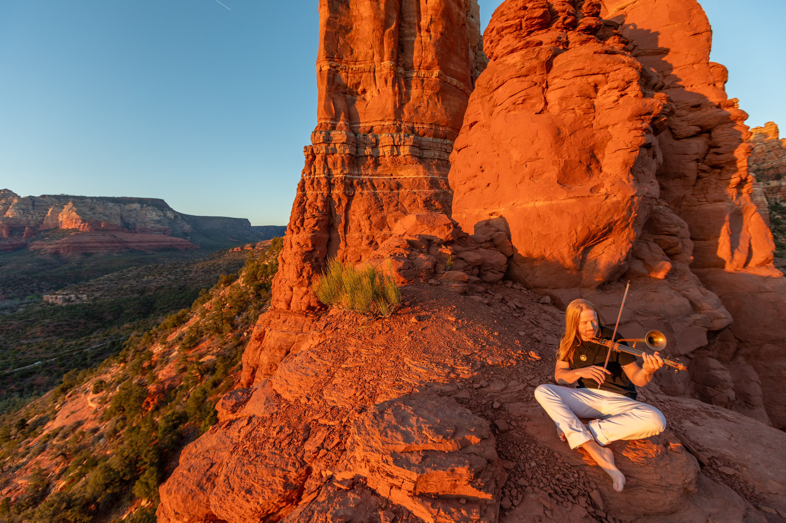

Sedona, Arizona
One Man Symphony
Electronic Press Kit · May 2026

The Artist
Tyler Carson plays the violin with the kind of conviction that makes audiences forget what room they're in. His style defies easy categorization — trained as a classical soloist at thirteen, fluent in Celtic fiddle from his earliest years, and now performing in the genre he calls "Living Music" — a fusion of classical precision, improvisation, and something that functions more like energy than entertainment. When Tyler plays, a solo violin sounds like a full band. When he finishes, people describe the silence differently than they did before.
Tyler grew up in Victoria, British Columbia, with a violin in hand before most children hold a pencil. A prodigy's résumé: solo artist with the Victoria Symphony at age thirteen, simultaneous training in classical and folk fiddle, early appearances at festival mainstages and on major television — the CBS Jerry Lewis Telethon among them. By his twenties he was touring with leading Celtic acts and performing across Canada, Japan, Thailand, Germany, and the Cayman Islands.
Everything changed when Tyler lost his voice. Spasmodic dysphonia — a neurological condition — stripped away his ability to sing and even to speak normally. What followed was not a setback, but a becoming. A special invitation brought him to give his first-ever solo performance in Auroville, India. Something opened there that has never closed. He has since become a certified full-spectrum energy healer, and his life's journey was documented in Living Music, a multi-award-winning film.
Today Tyler performs every Thursday in the red rock landscape of Sedona, where the canyon becomes the concert hall and the violin fills the kind of silence most people have stopped knowing how to find. He has performed for tens of thousands around the world and millions more on national television. CBS Mornings brought cameras into the canyon to document his story. Lindsey Stirling, one of the world's most recognized violinists, called him "such a great player" on air — live on national television. He is, as Sedona's guests consistently put it: impossible to forget.
In the Press
CBS Mornings · National Television · Nov 2024
"Violinist Tyler Carson is known professionally as the 'Fiddler on the Rock,' for his performances from the famous Red Rocks of Sedona, Arizona. Natalie Morales spoke with Carson about how an unexpected turn in his life drew him to the inspiring and spiritual landscape of beauty, hope and healing."
Watch the CBS SegmentSedona Red Rock News · Dec 2023
"Fiddling with the Red Rocks"
A profile tracing Tyler's path from classical training in Canada to touring with major Celtic acts — and how he became Sedona's Fiddler on the Rock.
Read HereInsight Timer · Featured Artist Profile
"A lifetime musician with 35 years of daily connection to his violin — Tyler's attunement and expression of Living Music is transcendental."
Featured on the world's largest meditation app. In Tyler's hands a solo violin is a full band.
Read HereDiscover the Phoenix Region · Magazine Cover · May–Jun 2025
"Fiddler on the Rock — Up and Coming from the Red Rocks of Sedona"
Cover story. A feature on his formative years, the Carson Kids, early performances, and his classical and fiddle training.
Read HereVisit Sedona · Official Tourism Feature
"Sedona's Unique Musical Experience: Fiddler on the Rock"
A feature about the show, Tyler Carson, and the Sedona concert experience — published by Sedona's official tourism platform.
Read Here